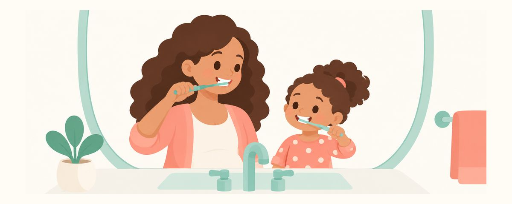

Child Brushes First, Parent Finishes: Tips for When Kids Start Brushing
Kids who grab the toothbrush still can't brush well alone. The child-first, parent-finishes routine, tips for 2 minutes, and why to keep it up to age 7 or 8.
At a glance
- Your child goes first, then you always finish
- Use a timer to make 2 minutes easy to see
- Keep doing the finishing pass until age 7 or 8
"Me! I want to do it!" When your child starts demanding the toothbrush, it's exciting, but it also raises questions. If you let them brush alone, you're not sure the teeth are clean. If you do it yourself, your child protests. Here's the "child brushes first, parent finishes" approach, which keeps your child motivated and the teeth clean.
They want to try, but it's still hard
Around 30 months, kids start grabbing the toothbrush and copying what grown-ups do. Wanting to do it themselves is the start of a great habit. But no child this age can brush well on their own.
Brushing is more delicate than it looks. You need to change the angle of the brush to reach the back molars and the tongue side, and gently clean along the gum line. Kids usually just rub the fronts of the front teeth they can see, or chew on the brush and taste the toothpaste and call it done. Until their hand skills catch up, food and plaque (the sticky film of bacteria on teeth) are likely to stay behind in the back, even when it looks like they brushed.
So the order matters. Your child brushes first, and a parent always finishes. Until hand skills catch up, around age 7 or 8, your finishing pass is needed. Even if your child seems to do a good job alone, keep up the finishing pass until then.
Here are some common mistakes at this stage.
- Stopping when your child says "Done!" Your child's brushing is practice. The finishing pass is the real brushing.
- Letting your child squeeze out the toothpaste. The amount quickly gets too big.
- Turning brushing into a time for scolding. When brushing feels like a bad thing, the pushback gets worse.
- Skipping bedtime brushing on tired days. Saliva drops during sleep, so the mouth isn't rinsed as well. That makes it the most important brushing of the day.
Brush together in this order
- Brush twice a day at set times. Brush in the morning and before bed, and never skip bedtime brushing.
- Squeeze out the toothpaste yourself. Use a rice-grain smear of fluoride toothpaste, and a pea-sized amount from the third birthday. When kids squeeze it, it's easy to use too much.
- Let your child brush first, for about 1 minute. Give lots of praise. The goal isn't brushing well, it's the experience of doing it themselves.
- Go over every surface yourself. Setting an order keeps you from missing spots. For example, start on the outside of the upper right teeth, go all the way around, then do the bottom the same way. Brush the chewing surfaces, cheek sides, and tongue sides.
- Make 2 minutes easy to see. Playing the app's brushing timer or a toothbrushing song lets your child know when it'll be over, so they fight less.
For the finishing pass, lay your child in your lap with their head toward you. You'll see inside the mouth better, and most kids settle. If your child gets bigger and doesn't want to lie down, you can stand behind them and let their head rest against your body while you brush.
When your child refuses the finishing pass, try these.
- Offer small choices, like picking one of two toothbrushes.
- Brush a stuffed animal's teeth first, then say "Now it's your turn."
- Make it a game, like "Let's find the cracker crumbs hiding in your molars!"
- On days when brushing doesn't go well, skip the scolding and calmly carry on at the next brushing.
Frequently asked questions
My child brushes well alone. Do I still need to finish?
Yes, keep up the finishing pass until age 7 or 8. The front teeth may look clean, but the back molars and the tongue sides are hard for kids to reach.
My child cries every time I do the finishing pass.
That's a natural reaction at first. Doing it in the same order with the same song every day helps it feel familiar. It's okay if some days you only manage a few seconds. But if your child fights so hard that the teeth haven't been properly brushed for days, ask the dentist for ideas.
Do we really need to hit 2 minutes?
2 minutes is a guide for cleaning every surface evenly. If your child brushes for about 1 minute and you finish, you'll naturally get close to 2 minutes. Cleaning every surface matters more than the exact time.
Should we rinse with water several times after brushing?
Have your child spit out the toothpaste, and it's best not to rinse with water many times. The fluoride needs to stay on the teeth to keep working.
When to see a dentist
- Brushing battles mean the teeth haven't been properly cleaned for days
- One spot bleeds every time you brush
- Your child seems to hurt in one particular tooth every time you brush
- You see brown or black spots or a white band on the teeth
- You'd like to learn brushing technique firsthand (the dentist can coach you at a checkup)
Get these at the right time
Enter your child's birth date (or due date) in the Tooth Calendar app and these articles arrive as reminders when they matter. Free, no sign-up.
Sources
The information in this article is for general educational purposes and does not replace professional dental care. Talk to a dentist about your child's condition.